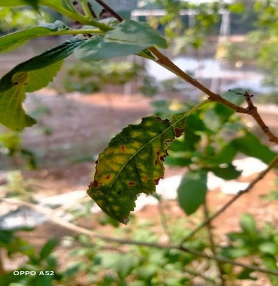

Soil Texture
Soil texture refers to the proportions of sand (2.0 – 0.05 mm in diameter), silt (0.05 – 0.002 mm), and clay (less than 0.002 mm) in the soil. Loam is soil that has equal parts sand, silt and clay. A soil texture triangle is determined by the proportion of sand, silt and clay. Below is a Soil Texture Triangle.
Soil Nutrients
Soil is a major source of nutrients for plant growth. Soil nutrients refer to nutrients that can be directly or indirectly absorbed and utilized by plants. It is the material basis of soil fertility and one of the important indicators for evaluating soil quality. Nutrients supplied by the soil are called mineral nutrients. The non-mineral nutrients such as carbon (C), hydrogen (H) and oxygen (O) come from air and water during photosynthesis. Soil mineral nutrients are separated into two groups the macro and micronutrients. The macro nutrients are further broken down into two groups the primary and the intermediate nutrients. The primary nutrients are required by plants in relatively large proportions. These are the most famous; the nitrogen (N), phosphorus (P) and potassium (K) commonly referred to as NPK. The intermediate nutrients are required by plants in medium quantities, these are calcium (Ca) magnesium (Mg) and sulphur (S). The micronutrients are required in relatively small proportions. They include the iron (Fe), boron (B), manganese (Mn), copper (Cu) and zinc (Zn).
Macro Nutrients
Nitrogen (N)
Nitrogen is a key element in plant growth. It is found in all plant cells, in plant proteins and hormones, and in chlorophyll. Atmospheric nitrogen is a source of soil nitrogen. Some plants such as legumes fix atmospheric nitrogen in their roots; otherwise fertiliser factories use nitrogen from the air to make ammonium sulfate, ammonium nitrate and urea. When applied to soil, nitrogen is converted to mineral form, nitrate, so that plants can take it up. The leaf sample on the left indicates the deficiency of nitrogen in plants.
Phosphorus (P)
Phosphorus helps transfer energy from sunlight to plants, stimulates early root and plant growth, and hastens maturity. The primary forms of phosphorus uptake by plant roots are H2PO4– (Dihydrogen phosphate) and HPO42- (hydrogen phosphate). There are various forms of organic phosphorus taken up in fewer quantities. Molecules like ATP (adenosine triphosphate) and others utilize phosphorus. ATP and phosphorus are critical molecules in photosynthetic processes. Genetic materials like DNA and RNA also contain phosphorus. Obviously, both of these are critical for plant growth. The leaf sample on the left indicates the deficiency of phosporous in plants.
Potassium (K)
Potassium increases vigour and disease resistance of plants, helps form and move starches, sugars and oils in plants, and can improve fruit quality. The major role of potassium is to regulate opening and closing of stomata which helps to maintain water and carbon dioxide uptake. It has an important role in the activation of many growth related enzymes in plants. It also provides resistance against the pest, diseases and stresses. The leaf sample on the left indicates the deficiency of potassium in plants.
Calcium (CACO3)
Calcium is essential for root health, growth of new roots and root hairs, and the development of leaves. It effects the intake and synthesis of other nutrients in plant. Calcium deficiency can be observed as small and folded leaves in plants. The leaf sample on the left indicates the deficiency of calcium in plants.
Magnesium (Mg)
Magnesium is a key component of chlorophyll, the green colouring material of plants, and is vital for photosynthesis (the conversion of the sun's energy to food for the plant). Deficiencies occur mainly on sandy acid soils in high rainfall areas, especially if used for intensive horticulture or dairying. Heavy applications of potassium in fertilisers can also produce magnesium deficiency, so banana growers need to watch magnesium levels because bananas are big potassium users. The leaf sample on the left indicates the deficiency of magnesium in plants.
Micro Nutrients
Iron (Fe)
Iron is responsible for producing chlorophyll and involves in photosynthesis. Iron deficiency can cause various symptoms in plants such as the Yellowing of leaves, particularly between the veins, Leaf veins may remain green or turn brown, Slow growth and stunted development, Reduced fruit production, Curling of leaves, Premature leaf drop. The leaf sample on the right indicates the deficiency of iron in plants.
Zinc (Zn)
Zinc activates enzymes and is involved in protein synthesis. It is also involved in the formation of chlorophyll and in the conversion of starch to sugars. The symptoms of zinc nutrient deficiency in plants include the chlorosis or yellowing of younger leaves, Bronzing of leaves, Stunting of plants, Dwarf leaves ('little leaf') and narrowing of leaves. The leaf sample on the right indicates the deficiency of zinc in plants.
Manganese (Mn)
Manganese is responsible for formation of chloroplast and performing the photosynthesis. It’s also involved in nitrogen metabolism and enzyme synthesis. The most common manganese deficiency symptoms are the Plants turn a pale green, Decreased growth, Older and new leaves are affected, Paleness between leaf veins, Leaves turn brown then die and Mottled brown spots. The leaf sample on the right indicates the deficiency of manganese in plants.

Boron (B)
Boron is responsible for formation of cell walls and cell membranes. It’s also involved in transport of sugar throughout the plant. The most common symptoms of a boron deficiency in plants include the Twisted growth of the leaf tips, Curled or wrinkled new leaves, Death of the growing tips, Affected roots cause slow or unhealthy growth, Hollow or rough plant stemsThe leaf sample on the right indicates the deficiency of boron in plants.
Copper (Cu)
Copper (Cu) is an essential mineral nutrient for the proper growth and development of plants. Copper acts as a cofactor in various enzymes and performs essential roles in photosynthesis, respiration and the electron transport chain, and is a structural component of defense genes in plants. The deficiency symptoms are The symptoms include the Shiny dark leaves with a greenish-blue undertone, Yellow and brown patches on leaves, Leaves become darker with purple or blue undertones, The leaves are directly impacted when placed beneath a light, a metallic or shiny sheen appears on the leaves. The leaf sample on the right indicates the deficiency of copper in plants.
Other Soil Parameters
Soil pH
Soil pH (also known as soil reaction) is a 14-unit scale (0-14) which measures the relative acidity or basicity (alkalinity) of a soil. A pH of 7 is the neutral mark. All values below 7 are considered acidic or sour soil. All values above 7 are considered alkaline or sweet soil. The optimal pH range of soil is 5.5 to 7.
Soil Salinity
Soil salinity is a measure of the concentration of all the soluble salts in soil water, and is usually expressed as electrical conductivity (EC). The major soluble mineral salts are the cations like sodium (Na+), calcium (Ca2+), magnesium (Mg2+), potassium (K+) and the anions like chloride (Cl−), sulfate (SO4 2−), bicarbonate (HCO3 −), carbonate (CO3 2−), and nitrate (NO3 −).
Soil Electrical Conductivity (EC)
Soil EC refers to the ability of soil to conduct an electrical current and is influenced by the presence of ions in the soil solution. These ions can conduct electricity, and their concentration affects the overall conductivity of the soil. The most common cation ions found in soil are Calcium (Ca+), Magnesium (Mg+), Potassium (K+), Ammonium (NH4+) and Hydrogen (H+)
Soil Organic Matter
Soil organic matter (SOM) typically comprises just 1%–5% of the soil mass that plays a critical role in maintaining the soil health. It is the largest terrestrial reservoir of organic C and also a large storehouse for all essential nutrients.